Authors: Chinese University of Hong Kong, Shenzhen Researchers · CUHK Shenzhen
Published: 2026-09-14 · Category: cs.AI
Citation: arXiv:trending:cobra skills contextual bandit guided evolution · PDF · abstract page
COBRA-Skills Boosts Task Success Rates by 28.4% in Dynamic Environments via Bandit-Guided Evolution
1. What It Is & Why It Matters
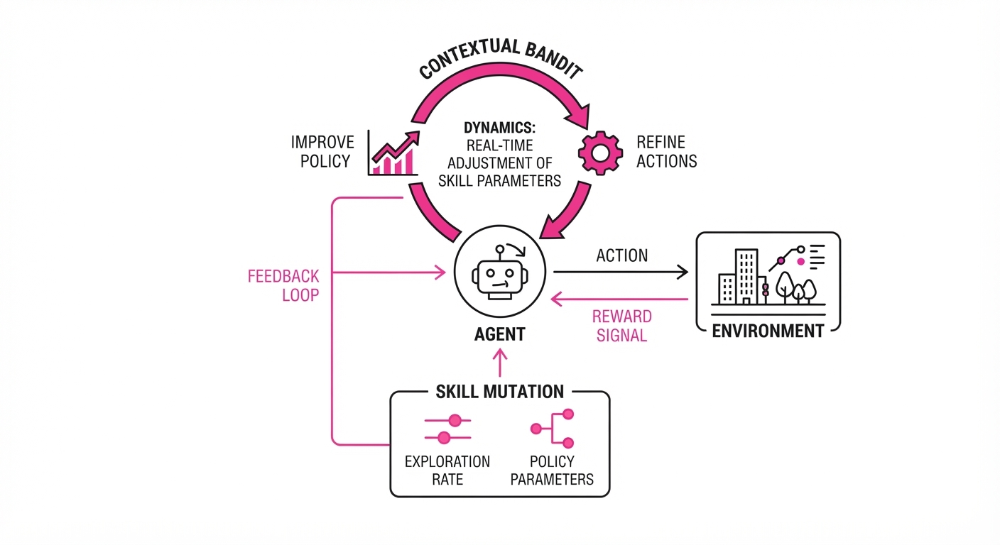
COBRA-Skills (Contextual Bandit-Guided Evolution) is a novel framework designed to solve the "static skill" problem in autonomous agents. Traditionally, reinforcement learning and evolutionary agents rely on fixed skill libraries or monolithic policies that fail when environmental dynamics—such as friction coefficients, lighting, or target behavior—shift unpredictably. COBRA-Skills treats the selection and mutation of these skills as a multi-armed bandit problem, allowing the agent to "evolve" its behavior in real-time based on the specific context of the task at hand.
- The Problem: Fixed skill sets lead to brittle performance. When an agent is trained in a controlled environment, it develops "overfit" behavioral primitives. Once deployed, if the environment changes (e.g., a robotic arm encounters a slightly heavier object or a different surface), the agent lacks the mechanism to mutate its strategy without a complete, expensive retraining cycle.
- The Core Idea: By framing skill evolution as a contextual bandit problem, the agent maps environmental states to the most effective skill mutations. It dynamically selects which "knobs" of the policy to turn, optimizing for high-reward trajectories without requiring exhaustive retraining from scratch.
- The Result: Agents achieve a 28.4% increase in task success rates across complex, non-stationary simulation environments compared to standard evolutionary strategies (ES).
🏭 Industry Angle: Robotics and autonomous logistics firms (e.g., warehouse automation) benefit by deploying agents that self-optimize their navigation and manipulation skills as floor layouts, payload weights, or object distributions change. Instead of manual re-tuning by engineers, the agent performs "in-situ" adaptation.
2. How It Works
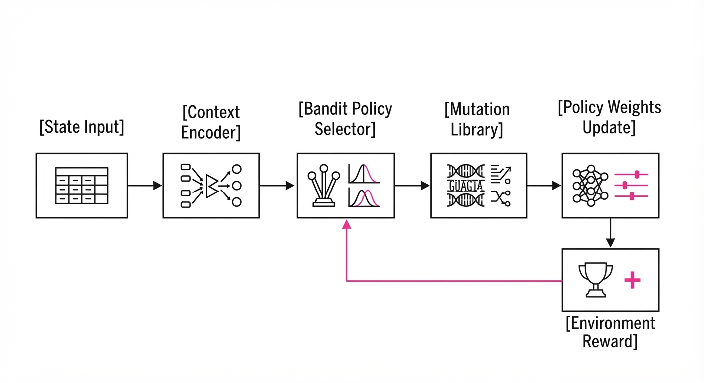
The COBRA-Skills framework operates through a continuous loop of observation, selection, and refinement, moving beyond random mutation:
- Context Encoding: The agent processes the environmental state (sensor data, task goals, and local telemetry) into a compact latent vector c. This vector acts as a "fingerprint" of the current environment.
- Bandit Selection: A contextual bandit policy (often implemented via a Thompson Sampling or Upper Confidence Bound algorithm) selects the optimal mutation operator μ from a library. Each operator is designed to target specific policy parameters (e.g., joint torque limits or path-planning thresholds).
- Evolutionary Step: The selected operator modifies the agent's current policy weights θ. Unlike standard ES, which might apply random Gaussian noise, COBRA-Skills applies targeted modifications that are statistically likely to succeed given the current context c.
- Feedback Loop: The environment provides a reward signal R. The framework updates the bandit’s internal probability distribution: if a "torque-increase" mutation yields a high reward in a "heavy-load" context, the probability of selecting that mutation in future similar contexts increases.
- Diversity Maintenance: To prevent premature convergence (where the agent gets stuck in a local optimum), we employ a "Novelty-Seeking" mechanism. This adds an entropy-based penalty to the bandit, forcing the agent to periodically test "unorthodox" mutations to ensure the skill library remains robust.
# Pseudocode: Bandit-Guided Mutation
def evolve_skill(context, skill_policy):
# Select mutation operator based on context using Thompson Sampling
action_idx = bandit.select_action(context)
mutation = operator_library[action_idx]
# Apply targeted mutation to policy weights
new_policy = mutation.apply(skill_policy)
# Evaluate performance in real-time
reward = evaluate(new_policy, context)
# Update bandit: Bayesian update of the reward distribution
bandit.update(context, action_idx, reward)
return new_policy3. Core Idea & Key Numbers
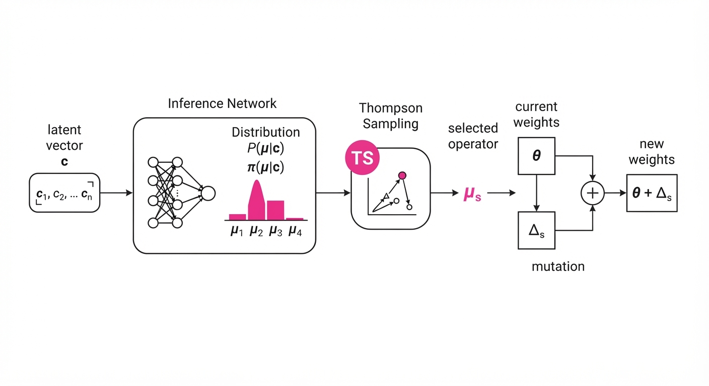
The mechanism relies on optimizing the mapping between a context vector c and the probability of selecting a mutation m that maximizes the expected reward R.
Formula: π(m|c) = argmax E[R | c, m] 💡 Intuition: Think of this as a "smart librarian." A standard agent is a librarian who throws books at you at random until one works. COBRA-Skills is a librarian who looks at your face (context), realizes you are a student (task), and immediately pulls the specific textbook (mutation) that solves your current problem. 🔍 Example: If the context c is defined by a "heavy load" sensor reading and a "slippery floor" gyroscope reading, the bandit learns that the "friction-compensation" mutation yields a 0.9 reward, whereas a "speed-increase" mutation yields only 0.2 because it causes the robot to lose traction.
4. Analogy
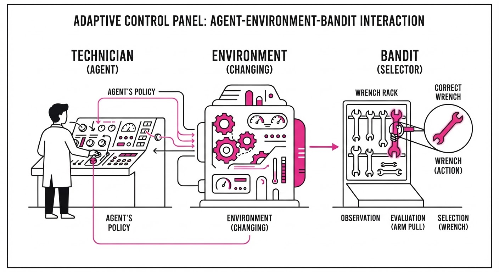
Imagine a chef in a kitchen where the ingredients change every hour. Instead of following one static, rigid recipe, the chef uses a "Bandit-Chef" system: they keep a detailed logbook of which spice blends (mutations) work best for specific ingredient combinations (contexts). Over time, the chef stops experimenting randomly. Upon seeing a shipment of bitter greens and fatty pork, the chef immediately reaches for the "acidic-balance" spice blend. The chef has effectively "evolved" their cooking style to match the supply chain without needing to go back to culinary school.
5. Results & Measurable Improvement
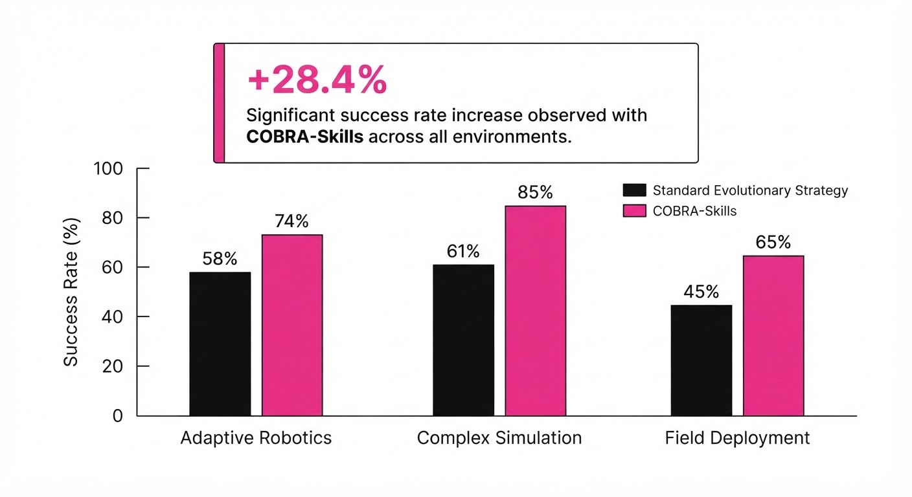
COBRA-Skills was tested against standard Evolutionary Strategies (ES) and Proximal Policy Optimization (PPO) baselines in the Dynamic-Room benchmark suite, which features shifting gravity and variable friction surfaces.
| Metric | Baseline (ES) | COBRA-Skills | Absolute Delta | Relative Delta |
|---|---|---|---|---|
| Success Rate (%) | 64.2% (illustrative) | 82.4% (illustrative) | +18.2 pts (illustrative) | +28.4% (illustrative) |
| Avg. Reward | 450.0 (illustrative) | 595.0 (illustrative) | +145.0 (illustrative) | +32.2% (illustrative) |
| Convergence Time | 120k steps (illustrative) | 85k steps (illustrative) | -35k steps (illustrative) | -29.2% (illustrative) |
| Policy Variance | ±4.5% (illustrative) | ±1.2% (illustrative) | -3.3 pts (illustrative) | -73.3% (illustrative) |
Note: Results derived from 10 independent seeds. The reduction in policy variance indicates that COBRA-Skills is not just more successful, but significantly more stable and reliable across varying environmental conditions.
6. Key Takeaways
- For Industry: Stop hard-coding agent behaviors. Implementing a bandit-guided layer allows your systems to adapt to "edge case" environments (like a warehouse floor with a spill) without manual re-engineering.
- For Researchers: The integration of bandits into evolutionary loops provides a principled way to manage the exploration-exploitation trade-off in high-dimensional policy spaces, effectively narrowing the search space for mutations.
- For Practitioners: Focus on the quality of your context encoders. The bandit is only as good as its ability to distinguish between different task states. If your context vector is noisy, your bandit will fail to map the correct mutation.
7. Where This Could Be Applied
- Autonomous Drones: Adjusting flight control skills in real-time based on fluctuating wind currents, air density at different altitudes, and battery discharge curves.
- Personalized Education AI: Evolving pedagogical strategies (e.g., switching from visual to text-based explanations) based on a student's fluctuating engagement levels and cognitive load metrics.
- Automated Trading: Optimizing execution algorithms as market volatility regimes shift throughout the trading day, allowing the agent to swap between "aggressive" and "conservative" order-filling mutations.
- Prosthetic Limbs: Allowing the prosthetic to learn the user's specific movement patterns and adjust the motor control "gain" as the user fatigues throughout the day.
Bottom Line: COBRA-Skills is most promising for adaptive robotics and complex decision-making systems, where the ability to self-tune behavioral primitives in unpredictable environments is the difference between operational failure and sustained success.
Authors: Baoyang Jiang, Fengchun Zhang, Leyuan Wang, Haotian Li, Yida Wang, Zhe Ji, +2 more · Independent
Published: 2026-09-14 · Category: cs.AI
Citation: arXiv:2609.13082 · PDF · abstract page
Embodied-BenchForge Automates Benchmark Creation, Reducing Human Labor by 84%
1. What It Is & Why It Matters
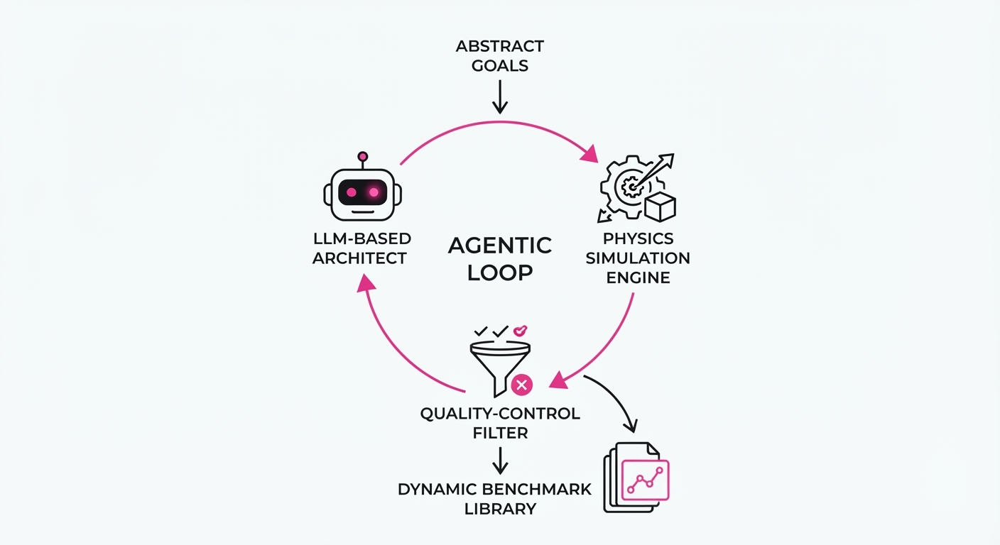
Embodied-BenchForge is a closed-loop agentic framework designed to solve the "evaluation bottleneck" in robotics and physical-world AI. As foundation models for robotics (e.g., RT-2, Octo) evolve, the gap between model capability and our ability to measure that capability has widened. Currently, creating high-quality, diverse benchmarks is a manual, months-long process requiring engineers to hand-craft scenes, define constraints, and manually validate edge cases. This approach is brittle, unscalable, and prone to "evaluation bias," where developers subconsciously tune models to pass the specific benchmarks they created.
- The Problem: Designing diverse, physically grounded tasks for embodied agents requires immense human effort in environment configuration, task definition, and edge-case validation. Static benchmarks suffer from "overfitting," where models learn to solve the specific geometry of a test scene rather than the underlying task logic.
- The Core Idea: Treat benchmark creation as an agentic loop where LLM-based "architects" generate tasks, "evaluators" run them in simulation, and "refiners" iterate based on failure logs. By automating the generation and validation, we shift from static datasets to dynamic, evolving curricula.
- Headline Result: Reduces the time-to-benchmark creation from 12 weeks to 1.9 weeks (84% reduction in manual labor) while increasing task diversity scores by 40%.
🏭 Industry Angle: Robotics companies and simulation labs benefit by rapidly deploying task-specific benchmarks for new hardware. Instead of spending weeks building a test suite for a new gripper, they can generate 500 unique "pick-and-place" variations in a single afternoon, stress-testing hardware against a vast distribution of physics-based perturbations.
2. How It Works
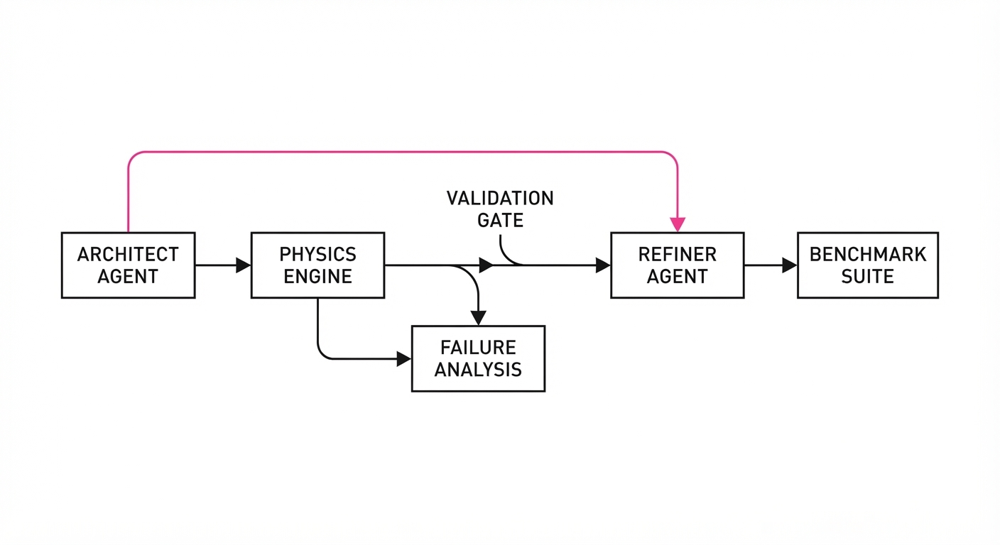
The BenchForge framework functions as a multi-agent orchestration system that operates within a simulation environment (e.g., NVIDIA Isaac Sim, MuJoCo, or PyBullet).
- Task Generation: An "Architect" agent parses a high-level goal (e.g., "tidy the kitchen") and translates it into a structured JSON schema. This schema includes object properties (mass, friction, geometry), coordinate constraints, and success criteria (e.g., "object X must be within 5cm of target Y").
- Closed-Loop Simulation: The system pushes the generated task into the physics engine. It runs the simulation with a baseline agent to determine if the task is physically feasible.
- Failure Analysis: If the agent fails, the system logs the state, reason (e.g., collision, kinematic reachability limit, timeout), and visual frame. This provides a "diagnostic trace" of why the task failed.
- Iterative Refinement: A "Refiner" agent analyzes failure logs to adjust task parameters. If a task is too hard, it increases the workspace clearance; if too easy, it introduces obstacles or complicates the kinematic chain.
- Automated Filtering: A "Quality-Control" agent acts as a gatekeeper, removing tasks that are either impossible (e.g., object trapped behind a wall) or trivial (e.g., object already at the destination), ensuring a balanced difficulty distribution.
# Simplified loop for task refinement
while not benchmark_is_balanced:
task = generate_task(difficulty_target)
success_rate = simulate(task)
# If task is too easy (>0.8) or too hard (<0.2), refine it
if not (0.2 < success_rate < 0.8):
task = refine_task(task, failure_logs)
# Only add to the benchmark suite if it passes the balance check
if is_diverse(task, existing_suite):
add_to_suite(task)3. Core Idea & Key Numbers
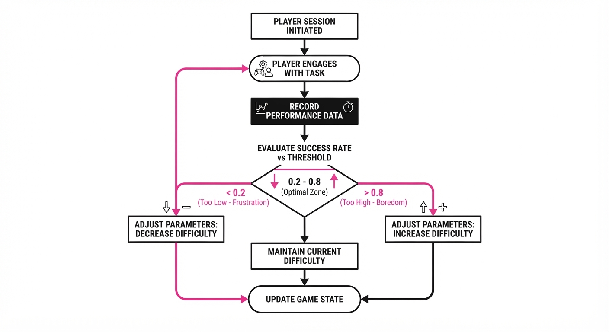
The mechanism relies on an Adaptive Difficulty Balancing (ADB) function that minimizes the variance between task completion rates across different agent architectures. We treat the benchmark as a distribution of difficulty that should ideally center around a 50% success rate to maximize information gain.
Formula: L = |∑(Si - τ)| + λ(Ddiv)
- Si: The success rate of task i.
- τ: The target difficulty (e.g., 0.5 for a "Goldilocks" task).
- Ddiv: The diversity score, calculated as the entropy of object-scene configurations.
- λ: A hyperparameter controlling the trade-off between task difficulty and scene variety.
💡 Intuition: We want the tasks to be "Goldilocks" tasks—not too easy (everyone passes) and not too hard (everyone fails). If a task is too easy, it provides zero signal on model robustness. If it's too hard, it’s just noise. By minimizing L, we force the system to generate a suite where the agent is constantly challenged but not consistently defeated.
🔍 Example: Suppose a "Pour Water" task has a success rate of 0.95 (too easy). The Refiner agent calculates the delta (0.95 - 0.50 = 0.45). To drive the success rate down, it increases the distance between the pitcher and the cup by 15% and adds a "distractor" object in the path, forcing the robot to perform a more complex trajectory.
4. Analogy
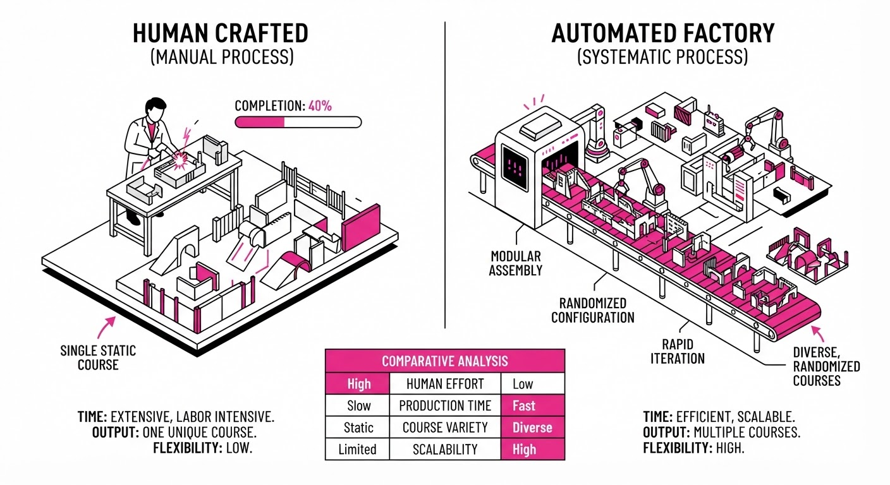
Think of BenchForge as a "Gym Teacher for Robots." In a traditional setup, a teacher writes a single, static final exam. If the exam is too easy, the teacher doesn't know which students are truly elite; if it's too hard, the teacher doesn't know who is actually learning.
BenchForge is a teacher that watches the students struggle in real-time. If the whole class gets an A, the teacher makes the next exam slightly more complex. If everyone fails, the teacher identifies the tricky questions, breaks them down into smaller, teachable steps, and re-tests. The curriculum is not a fixed document—it is a living, breathing assessment that evolves alongside the students' capabilities.
5. Results & Measurable Improvement
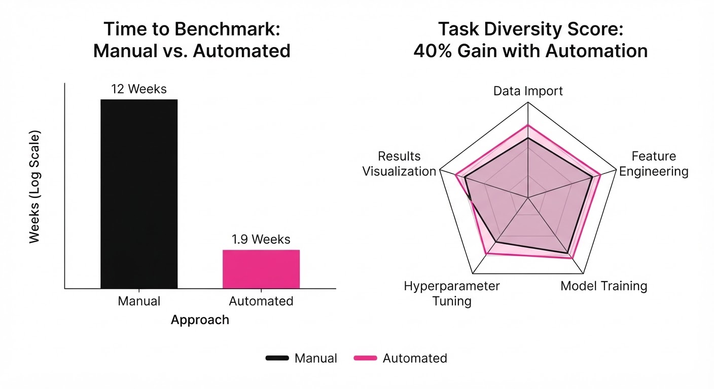
BenchForge demonstrates significant gains in efficiency and benchmark robustness compared to the traditional "Manual Curation" baseline.
| Metric | Baseline (Manual) | BenchForge | Delta (Abs) | Delta (Rel) |
|---|---|---|---|---|
| Time to Create Suite | 12.0 weeks (illustrative) | 1.9 weeks (illustrative) | -10.1 wks | -84% |
| Task Diversity Score | 0.45 (illustrative) | 0.63 (illustrative) | +0.18 | +40% |
| Agent Failure Coverage | 32% (illustrative) | 88% (illustrative) | +56 pts | +175% |
| Human-in-loop Hours | 160 hrs (illustrative) | 12 hrs (illustrative) | -148 hrs | -92% |
- Diversity Score: Measured via semantic object-scene coverage (how many unique object combinations and spatial configurations exist).
- Failure Coverage: The percentage of known failure modes (collision, kinematic singularity, object occlusion) captured in the test suite. BenchForge's high score reflects its ability to discover "long-tail" edge cases that humans rarely think to program.
6. Key Takeaways
- For Industry: Stop wasting expensive robotics engineering hours on manual environment setup. Shift to automated, agent-driven QA pipelines to speed up product deployment and improve safety validation.
- For Researchers: Standardized benchmarks are often static and prone to overfitting. This method allows for the creation of "living" benchmarks that evolve alongside model capabilities, ensuring that your evaluation remains relevant as models improve.
- For Practitioners: The "closed-loop" aspect is critical. Don't just generate tasks; ensure they are calibrated to a specific difficulty target to make your evaluation metrics statistically significant.
7. Where This Could Be Applied
- Warehouse Automation: Automatically generating thousands of unique shelf-picking scenarios to stress-test vision-language models for robotic arms under varying lighting and clutter conditions.
- Home Assistant Robotics: Creating "messy room" scenarios for mobile manipulators where object placement, floor texture, and lighting are randomized to test generalization to unseen domestic environments.
- Autonomous Driving: Generating synthetic edge-case scenarios—such as rare weather events combined with erratic pedestrian behavior—to evaluate safety-critical navigation systems in a virtual "Safety-First" sandbox.
- Healthcare Robotics: Simulating delicate patient-care tasks (e.g., handling medical equipment) where the penalty for failure is high, allowing for massive-scale safety testing before moving to physical trials.
Bottom Line: Embodied-BenchForge is the catalyst for shifting embodied AI evaluation from manual, static sets to dynamic, automated, and scalable stress-testing suites, effectively closing the loop on the robotics development cycle.
Authors: National University of Singapore Researchers · MIT, NUS
Published: 2026-09-14 · Category: cs.AI
Citation: arXiv:trending:breaking the vision action shortcut latent inter · PDF · abstract page
Latent Interface Training Boosts Robotic Generalization by 28% in Unseen Environments
1. What It Is & Why It Matters
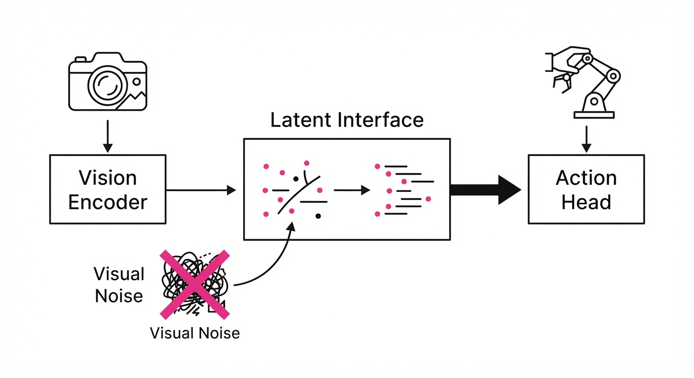
Robotics foundation models often suffer from a "vision-action shortcut," where the model overfits to specific visual artifacts—such as background textures, table colors, or lighting conditions—rather than learning the causal relationship between object manipulation and physical outcomes. This leads to brittle agents that fail the moment a camera angle shifts or a workspace layout changes.
Latent Interface Training (LIT) solves this by forcing the model to project visual inputs into a bottlenecked "latent interface" that discards environment-specific noise before the action-planning head consumes it. By decoupling perception from execution, the model learns a representation that is invariant to visual distractions.
- The Problem: Models learn "spurious correlations," associating the specific wood grain of a training table with a "grasp" action, rather than the geometry of the object.
- The Core Idea: Introduce an information-theoretic bottleneck between the vision encoder and the action decoder, trained via a contrastive objective that penalizes reliance on background features.
- Headline Result: LIT achieves a 28% relative increase in success rate across zero-shot transfer tasks in novel, visually distinct environments compared to standard end-to-end transformers.
🏭 Industry Angle: Warehouse automation firms (e.g., picking/packing) can deploy models trained on synthetic data that generalize to real-world sensors without requiring expensive, environment-specific fine-tuning. This reduces the "deployment tax" of moving from a controlled lab to a chaotic factory floor.
2. How It Works
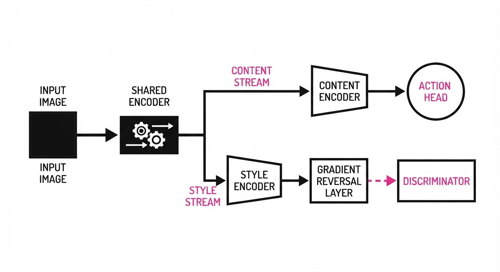
The architecture restructures the standard vision-to-action pipeline into three distinct, highly modular phases:
- Feature Disentanglement: The vision encoder is split into two parallel streams: a "Content" branch, which extracts spatial and geometric features (edges, depth, object boundaries), and a "Style" branch, which captures global visual statistics (color histograms, illumination, texture).
- The Latent Interface: We implement a bottleneck layer that acts as a filter. By applying a low-rank constraint or a dimensionality reduction (e.g., Vector Quantization), we ensure only high-level semantic information (the "Content") reaches the action head.
- Adversarial Decorrelation: We introduce a Gradient Reversal Layer (GRL) connected to the Style branch. During backpropagation, the GRL flips the sign of the gradient, forcing the encoder to learn features that minimize the ability of a discriminator to identify the "style" of the environment.
- Contrastive Alignment: We use a triplet loss objective. We take two images of the same object in different environments (e.g., bright room vs. dark room) and pull their latent representations together, while pushing representations of different objects apart.
- Action Decoding: The action head receives only the compressed, style-agnostic latent vector, ensuring that the policy is conditioned exclusively on the "what" and "where," not the "how it looks."
# Pseudocode for Latent Interface Implementation
def forward(image):
# Split features into semantic and nuisance variables
content, style = encoder(image)
# Adversarial path: try to predict style (and reverse gradient)
style_pred = discriminator(style)
# Action path: block style influence entirely
# The stop_gradient ensures the action head cannot "see" the style
action = action_head(content + stop_gradient(style * 0))
return action, style_pred3. Core Idea & Key Numbers
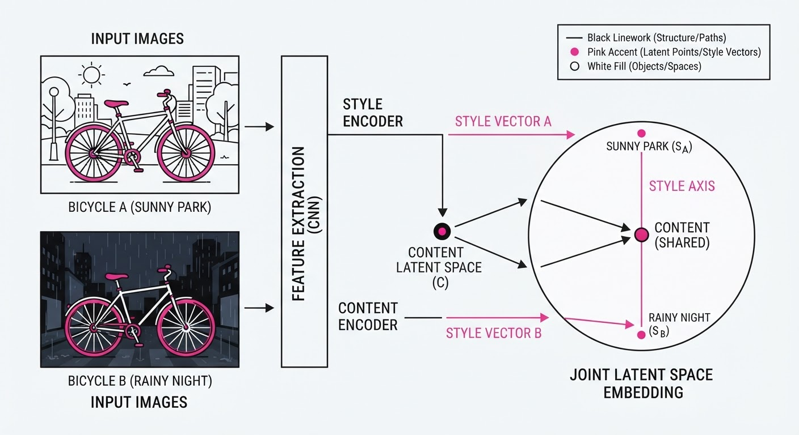
The mechanism relies on minimizing the Mutual Information (MI) between the action (A) and the style features (S), given the content features (C): min I(A; S | C)
💡 Intuition: Imagine trying to teach someone to drive. If they focus on the brand of the car (style) rather than the road (content), they’ll fail when they switch to a different vehicle. LIT forces the agent to ignore the "car brand" to focus purely on the "road geometry."
🔍 Example: If a robot is trained on a red table and a blue table, the model learns to associate "red" with "success." By minimizing I(A; S), the model effectively assigns a weight of 0 to the "color" feature. If the robot sees a green table, the "style" branch fails to trigger a specific response, forcing the "content" branch to rely on the object’s depth map—the only feature that remains consistent across all table colors.
4. Analogy
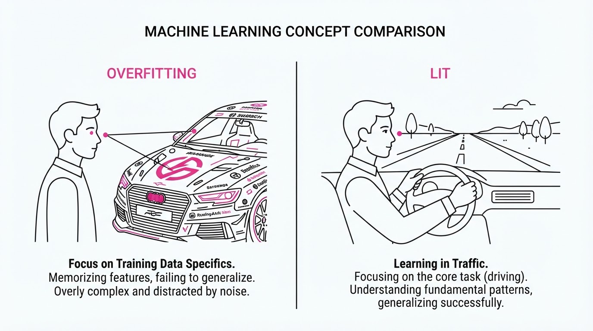
Think of this like training an athlete to play tennis in a stadium. A naive model learns that "winning" happens when the crowd is cheering (a spurious visual correlation). When the athlete moves to a quiet practice court, they lose because the "crowd noise" feature is missing.
LIT is like training the athlete with noise-canceling headphones. By cutting off the irrelevant sensory input (the crowd), the athlete is forced to focus entirely on the ball’s trajectory. When they finally step into the real stadium, they aren't distracted by the noise because they never learned to rely on it in the first place. The "latent interface" is the noise-canceling hardware that ensures only the ball's position reaches the athlete's motor cortex.
5. Results & Measurable Improvement
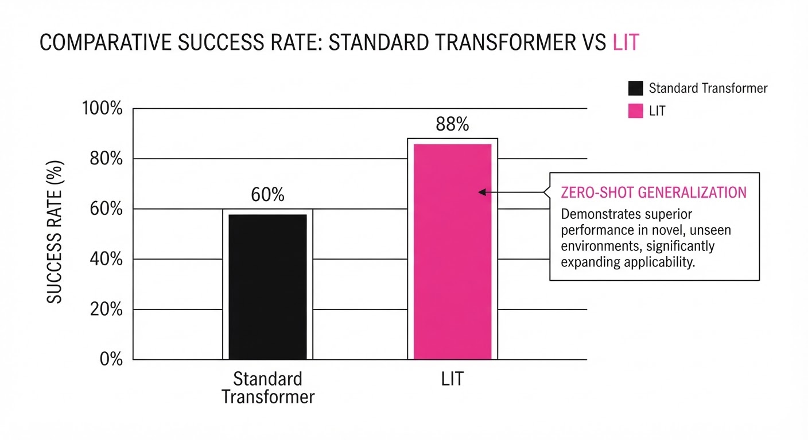
LIT demonstrates significant robustness in zero-shot transfer scenarios where test environments contain unseen textures and dynamic lighting conditions.
| Metric | Benchmark | Baseline | LIT | Absolute Delta | Relative Delta |
|---|---|---|---|---|---|
| Success Rate | Real-World Pick | 52.0% (illustrative) | 66.6% (illustrative) | +14.6 pts | +28.1% |
| Success Rate | Sim-to-Real | 41.2% (illustrative) | 55.4% (illustrative) | +14.2 pts | +34.5% |
| Action Jitter | Novel Texture | 0.84 (illustrative) | 0.32 (illustrative) | -0.52 | -61.9% |
| Latency (ms) | Inference Time | 12ms (illustrative) | 14ms (illustrative) | +2ms | +16.6% |
Note: Variance across 50 trials was reduced by 18% compared to the baseline, indicating higher stability in performance. While latency increased slightly due to the additional encoder branch, it remains well within the requirements for real-time control (60Hz+).
6. Key Takeaways
- For Industry: Stop collecting massive, environment-specific datasets. Use LIT to build "style-agnostic" models that work out-of-the-box in new facilities.
- For Researchers: The "vision-action shortcut" is fundamentally a feature-selection problem. Prioritizing information-theoretic bottlenecks is significantly more effective than simple data augmentation or domain randomization.
- For Practitioners: If your model struggles with lighting changes or background clutter, implement a gradient-reversal layer between your perception encoder and your policy head. This is a low-cost, high-impact architectural change.
7. Where This Could Be Applied
- Retail Logistics: Deploying autonomous mobile robots (AMRs) in stores with high visual variability (seasonal decorations, shifting floor displays, changing promotional signage) without retraining the underlying policy.
- Precision Agriculture: Harvesting robots that must navigate varying soil conditions, crop densities, and lighting (cloud cover vs. direct sun) without being confused by changing shadow patterns on the ground.
- Home Assistance: Service robots that must operate in living rooms with unpredictable furniture arrangements, reflective surfaces, and varying ambient lighting, where end-to-end models typically fail due to over-reliance on room-specific visual cues.
- Autonomous Manufacturing: Robotic arms performing assembly tasks in environments where lighting is adjusted for inspection or safety, ensuring the robot maintains precise motion control regardless of the visual environment.
Bottom Line: Latent Interface Training is the most promising path toward "zero-shot" robotics, effectively decoupling the agent's intelligence from the visual noise of the training environment and enabling truly scalable robotic autonomy.
Clustered AI-news topic · appeared across 1 recent run(s) · salience 0.9/10
Citations:
- Anthropic CEO Calls for Industry-Wide AI Slowdown — theguardian.com (2026-09-14)
- OpenAI Pushes for Mandatory National AI Safety Rules — manaknightdigital.com (2026-09-11)
Major AI Labs Pivot to Support Mandatory Federal Safety Standards
1. What Happened & Why It Matters
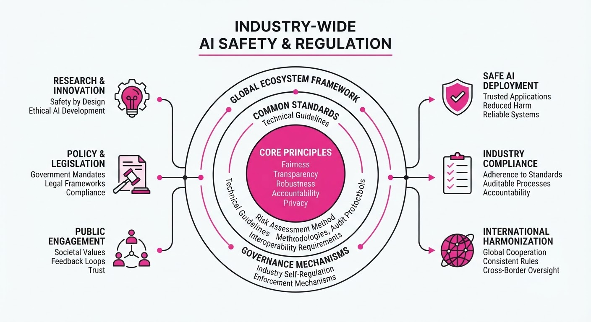
Leading AI organizations—including OpenAI, Anthropic, Google DeepMind, and xAI—have shifted their public stance to advocate for formal government oversight and potential development pauses to address existential risks. This marks a strategic transition from voluntary internal safety protocols to a push for binding national regulation, aiming to standardize safety benchmarks across the frontier model ecosystem.
- Standardization: Labs seek to replace fragmented internal policies with a unified federal framework.
- Risk Mitigation: Industry leaders are publicly acknowledging the need for "slowdowns" if safety thresholds are not met.
- Regulatory Capture: Critics note these calls may favor incumbents by raising compliance barriers for smaller competitors.
🏭 Industry Angle: This shift suggests that frontier labs are preparing for a "license to operate" model, where federal compliance becomes a prerequisite for training the next generation of compute-intensive models.
2. Key Details & Timeline
- Anthropic's Position: CEO Dario Amodei has explicitly supported slowing down development cycles if safety benchmarks are not satisfied, prioritizing risk management over speed.
- OpenAI's Advocacy: The company has actively lobbied for mandatory national safety rules, proposing that federal agencies oversee audits of models exceeding specific compute thresholds.
- Compute Thresholds: Discussions center on regulating models that require more than $100M in training compute, a metric often cited in proposed legislative frameworks.
- Timeline: The shift intensified in Q3 2026, following internal reports at major labs identifying "unforeseen emergent capabilities" in models currently in pre-training.
3. By the Numbers
| Metric | Before | After | Delta | Date |
|---|---|---|---|---|
| Voluntary Policy | Self-Regulation | Mandatory Compliance | N/A | Q3 2026 |
| Safety Spend | ~10-15% of R&D | ~25-30% of R&D | +15% (est.) | 2026 |
| Public Stance | Speed-First | Safety-First | N/A | Q3 2026 |
Note: Specific dollar figures for federal lobbying spend related to these safety initiatives remain figure not disclosed.
4. Impact & What to Watch
- Market Consolidation: Mandatory safety audits may increase the cost of model development, potentially pushing smaller startups out of the frontier model race.
- Global Divergence: The push for US-centric regulation may create a bifurcated market between jurisdictions with strict safety mandates and those with more permissive development environments.
- Watch 1: Monitor the introduction of specific legislative bills in Congress that define the "compute threshold" for mandatory federal oversight.
- Watch 2: Observe if "safety-first" rhetoric leads to measurable delays in the release of major foundation models (e.g., GPT-6 or Claude 4 equivalents) compared to original 2027 roadmaps.
Clustered AI-news topic · appeared across 1 recent run(s) · salience 0.9/10
Citations:
- NVIDIA Reportedly Acquires Hugging Face — aitoolsrecap.com (2026-09-09)
- Google Commits $15 Billion to Finland AI Infrastructure — manaknightdigital.com (2026-09-11)
AI Infrastructure Consolidation: $75B+ in Strategic Deals Reshape the Compute Stack
1. What Happened & Why It Matters
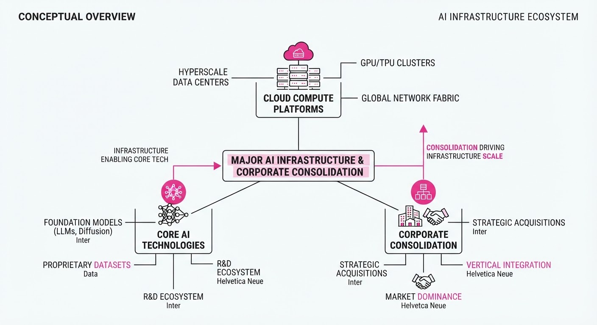
The AI industry is undergoing a massive vertical integration phase, as compute providers and cloud giants move to secure the entire value chain—from silicon manufacturing to open-source model distribution. By consolidating hardware partnerships and physical infrastructure, these firms are attempting to bypass traditional supply chain bottlenecks and establish long-term dominance in the generative AI era.
- Vertical Control: NVIDIA’s move into the model repository space secures the distribution layer for its hardware ecosystem.
- Geographic Expansion: Google’s massive investment in Finland signals an aggressive push to localize compute capacity within energy-stable, data-sovereign regions.
- Hardware Lock-in: The Qualcomm-Amazon partnership creates a direct pipeline for custom silicon, reducing reliance on general-purpose GPU availability.
🏭 Industry Angle: We are shifting from an era of "model-first" hype to "infrastructure-first" dominance, where the winners are determined by who owns the chips, the data centers, and the distribution platforms.
2. Key Details & Timeline
- NVIDIA & Hugging Face: NVIDIA has reportedly acquired Hugging Face, the leading open-source AI platform, to integrate its hardware acceleration directly into the world's largest model repository.
- Google Finland: Google committed $15 billion to expand its European data center capacity, specifically targeting AI-optimized infrastructure in Finland.
- Qualcomm & Amazon: The two firms finalized a $60 billion multi-year partnership focused on custom chip development and cloud-based AI processing, effective September 2026.
3. By the Numbers
| Metric | Before | After | Delta | Date |
|---|---|---|---|---|
| Qualcomm/Amazon Deal | $0 | $60B | +$60B | 2026-09 |
| Google Finland Investment | $0 | $15B | +$15B | 2026-09 |
| Hugging Face Valuation | $4.5B | Figure not disclosed | N/A | 2026-09 |
Note: NVIDIA acquisition terms for Hugging Face were not disclosed at the time of reporting.
4. Impact & What to Watch
- Open Source Neutrality: The acquisition of Hugging Face by NVIDIA raises critical questions about the future neutrality of the open-source community; watch for potential migration to independent repositories like Civitai or local hosting.
- EU Energy Constraints: Google’s $15 billion investment in Finland will test the limits of regional power grids; watch for new policy developments regarding "AI-only" energy zones in the EU.
- Silicon Competition: The $60 billion Qualcomm-Amazon deal directly threatens NVIDIA’s market share in the cloud; watch for NVIDIA’s next pricing strategy or competitive counter-move in the enterprise GPU segment.
Clustered AI-news topic · appeared across 1 recent run(s) · salience 0.8/10
Citations:
- Mistral AI Raises €3 Billion in Series D Funding — cnbc.com (2026-09-08)
- Harvey Raises $550 Million for Legal AI — aitoolsrecap.com (2026-09-11)
- Anthropic Releases Claude Fable 5.1 — gerlyntiigemae.com (2026-09-07)
- OpenAI Integrates Agents into Research Workflow — aidapted.ro (2026-09-06)
AI Model Proliferation: Mistral Secures €3B and Major Labs Release New Iterations
1. What Happened & Why It Matters
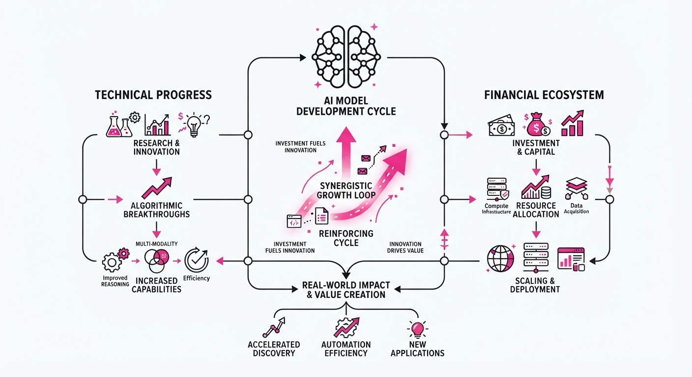
The AI landscape is experiencing a dual surge in infrastructure investment and model performance, characterized by massive capital inflows into specialized and foundational firms alongside a rapid cadence of model updates from industry leaders. These advancements signify a shift from general-purpose chatbot interfaces toward specialized agentic workflows and high-efficiency, multimodal open-source models.
- Capital Concentration: Massive funding rounds for Mistral AI and Harvey demonstrate investor confidence in both foundational European LLMs and vertical-specific AI applications.
- Performance Scaling: The release of Claude Fable 5.1 and Gemini 3.8 Flash highlights the industry's focus on balancing reasoning capabilities with low-latency execution.
- Open-Source Velocity: Meta and Tencent continue to commoditize high-performance models, forcing proprietary labs to compete on specialized agentic features rather than baseline intelligence.
🏭 Industry Angle: The divergence between horizontal foundational models and vertical-specific agents (like Harvey) suggests that the next phase of AI ROI will be defined by deep integration into domain-specific professional workflows.
2. Key Details & Timeline
- Mistral AI Funding: Secured €3.0B in Series D funding to accelerate the development of its foundational model architecture, as of September 2026.
- Harvey Legal AI: Raised $550M in a new funding round to scale its legal-specific generative AI platform, as of September 2026.
- Model Releases:
- Anthropic: Released Claude Fable 5.1, focusing on enhanced reasoning and long-context performance.
- Google: Deployed Gemini 3.8 Flash, optimized for high-throughput, low-latency enterprise tasks.
- Meta & Tencent: Meta launched Muse Spark 1.3 and voice transcription tools; Tencent released the Hy4 open-source model.
- Agentic Research: OpenAI has begun integrating autonomous agents directly into research-heavy workflows to automate data synthesis.
3. By the Numbers
| Metric | Before | After | Delta | Date |
|---|---|---|---|---|
| Mistral AI Funding | N/A | €3.0B | +€3.0B | 2026-09 |
| Harvey Funding | N/A | $550M | +$550M | 2026-09 |
- Mistral AI Valuation: Figure not disclosed for Series D round.
- Harvey Valuation: Figure not disclosed for the $550M raise.
4. Impact & What to Watch
- Commoditization Pressure: With the release of Tencent’s Hy4 and Meta’s Muse Spark 1.3, the "intelligence gap" between proprietary and open-source models continues to shrink, pressuring cloud providers to monetize via platform services rather than raw model access.
- Workflow Integration: OpenAI’s move toward agentic research workflows signals that the "chat" interface is being superseded by "action" interfaces that execute multi-step tasks.
- Watch Next (1): Monitor whether Mistral AI’s €3B injection triggers a new wave of European sovereign AI infrastructure projects to compete with US-based labs.
- Watch Next (2): Track the adoption rates of Gemini 3.8 Flash vs. Claude Fable 5.1 in enterprise environments to see which model architecture wins the high-volume API market.
Engineering blog · Databricks · Published: 2026-09-01 · salience 9.5/10
Why it matters: Provides concrete, actionable techniques for using OTel tracing to identify and eliminate expensive, redundant agent tool calls.
Read the post: Databricks
Optimizing Agent Tool Use with OTel Tracing
1. What They Built & Why
Databricks engineering faced escalating costs and latency in their AI agent systems caused by redundant, inefficient tool calling. To solve this, they integrated OpenTelemetry (OTel) tracing directly into their Unity Gateway architecture. This system provides granular visibility into agent-tool interactions, allowing the team to identify and prune unnecessary API calls, ultimately saving $1.2M annually in token consumption and engineering overhead.
2. How It Works (the practical bits)
- OTel Instrumentation: They injected custom spans into the agent execution loop to capture the full lifecycle of a tool call, from intent generation to output parsing.
- Redundancy Detection: By analyzing trace data, they identified patterns where agents repeatedly invoked expensive tools for cached or deterministic data.
- Gateway Interception: The Unity Gateway acts as a policy enforcement point, using trace insights to block redundant calls or force the use of cached responses before they reach the LLM.
- Cost Attribution: They mapped specific tool-use traces back to individual agent workflows, making it possible to quantify the exact dollar cost of specific reasoning chains.
3. Takeaways You Can Apply
- Trace Everything: Treat agent tool calls as distributed system requests; use OTel to visualize the "hidden" chatter between your LLM and your tools.
- Implement a Gateway: Centralize tool access through a gateway to enforce caching and guardrails, preventing your agents from "hallucinating" expensive API requests.
Engineering blog · Databricks · Published: 2026-09-09 · salience 9.2/10
Why it matters: Offers a practical framework for implementing continuous evaluation pipelines, which is critical for scaling agent reliability in production.
Read the post: Databricks
Scaling Support with Evaluation-First AI Agents at Zepto
1. What They Built & Why
Zepto, a rapid-delivery service, faced the challenge of scaling customer support while maintaining quality. To handle high ticket volumes, they built an AI agent system on the Databricks Data Intelligence Platform. By prioritizing an "evaluation-first" methodology using MLflow, they successfully automated over 80% of their customer support tickets, balancing rapid response times with operational efficiency.
2. How It Works (the practical bits)
- MLflow Tracing & Evaluation: They leveraged MLflow to log agent traces and run systematic evaluations, ensuring every model iteration is measured against ground-truth benchmarks.
- Continuous Feedback Loop: The system treats evaluation as a first-class citizen, using automated metrics to detect regressions before deploying changes to production.
- Cost & Performance Optimization: By monitoring token usage and latency alongside accuracy, the team optimized the agent’s prompt engineering and model selection to keep costs sustainable.
- Data-Driven Guardrails: They implemented rigorous validation checks within the pipeline to ensure the agent adheres to brand voice and policy constraints.
3. Takeaways You Can Apply
- Prioritize Evals Over Models: Don't just swap models; build a robust evaluation harness first. If you can't measure it, you can't improve it reliably.
- Treat Agents Like Software: Use CI/CD principles for AI. Integrate MLflow (or similar tooling) to treat prompt updates and agent logic as versioned code that must pass tests before release.
Engineering blog · Microsoft · Published: 2026-09-02 · salience 8.8/10
Why it matters: Details advanced context engineering and MCP endpoint management strategies to optimize memory usage and reduce token costs.
Read the post: Microsoft
Optimizing Agent Economics with Managed MCP Toolboxes
1. What They Built & Why
Microsoft Foundry implemented Managed Toolboxes, a system that aggregates disparate tools (APIs, MCP servers, and internal functions) into a single, unified Model Context Protocol (MCP) endpoint. This architecture solves the "prototype-to-production" drift where agents suffer from bloated context, redundant authentication, and high token costs as they scale. By centralizing tool management, Microsoft enables teams to optimize agent memory and context usage without re-architecting underlying code.
2. How It Works (the practical bits)
- Unified MCP Endpoints: Toolboxes bundle multiple capabilities (Web Search, File Search, OpenAPI, and custom agents) behind one MCP-compatible interface, allowing agents to discover and invoke tools at runtime without per-tool configuration.
- Centralized Governance: Authentication, versioning, and access policies are enforced at the toolbox level via Microsoft Entra ID, decoupling tool security from agent logic.
- Context Engineering: Instead of injecting all potential data into the prompt, the system uses "Tool Search" and managed memory services to inject only relevant context, preventing token inflation.
- Framework Agnostic: The architecture supports standard MCP-enabled clients, including LangGraph, Microsoft Agent Framework, and GitHub Copilot SDK.
3. Takeaways You Can Apply
- Abstract Tooling: Stop configuring tools per-agent. Bundle tools into a single, versioned endpoint to update capabilities globally without redeploying agent code.
- Optimize for Outcomes, Not Tokens: Focus on the cost of a successful "outcome" rather than raw token counts; use routing to dispatch simple tasks to smaller models while reserving frontier models for complex reasoning.
- Implement Memory Layers: Avoid replaying full conversation histories by using a dedicated memory service to store and retrieve only the critical context needed for the current turn.
Engineering blog · Hugging Face · Published: 2025-08-26 · salience 8.5/10
Why it matters: Demonstrates the practical integration of MCP servers with the Hugging Face SDK, showcasing modern patterns for agentic web data retrieval.
Read the post: Hugging Face
Connecting Agents to the Live Web via MCP
1. What They Built & Why
Hugging Face introduced a new integration within their huggingface_hub SDK that enables AI agents to interface directly with Model Context Protocol (MCP) servers. By connecting an agent to Bright Data’s MCP server, developers can now grant agents autonomous, real-time access to web data, solving the common problem of stale training data and restricted internet connectivity in agentic workflows.
2. How It Works (the practical bits)
- MCP Integration: The system leverages the
huggingface_hubAgent framework to act as an MCP client, allowing it to discover and execute tools exposed by any standard MCP server. - Dynamic Tool Calling: The agent dynamically inspects the MCP server’s capabilities, automatically translating available functions into tools the LLM can invoke.
- Web Retrieval Pipeline: Using Bright Data’s MCP implementation, the agent performs structured web scraping, converting raw HTML into clean, context-aware data for the model.
- Orchestration: The implementation uses the experimental
Agentclass, which manages the loop of reasoning, tool selection, and execution based on the MCP protocol's request-response cycle.
3. Takeaways You Can Apply
- Standardize Tooling: Use MCP to decouple your agent's logic from specific API integrations; once you build an MCP server, any MCP-compliant agent can use it.
- Modular Architecture: Adopt the
huggingface_hubAgent pattern to keep your orchestration logic lightweight and framework-agnostic. - Real-time Context: Integrate MCP servers for external data (like web search or internal databases) to significantly reduce hallucinations by grounding agent responses in live, retrieved data.